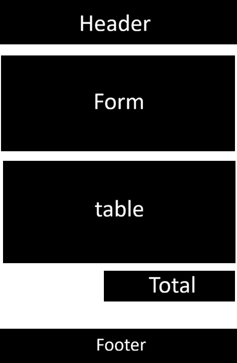
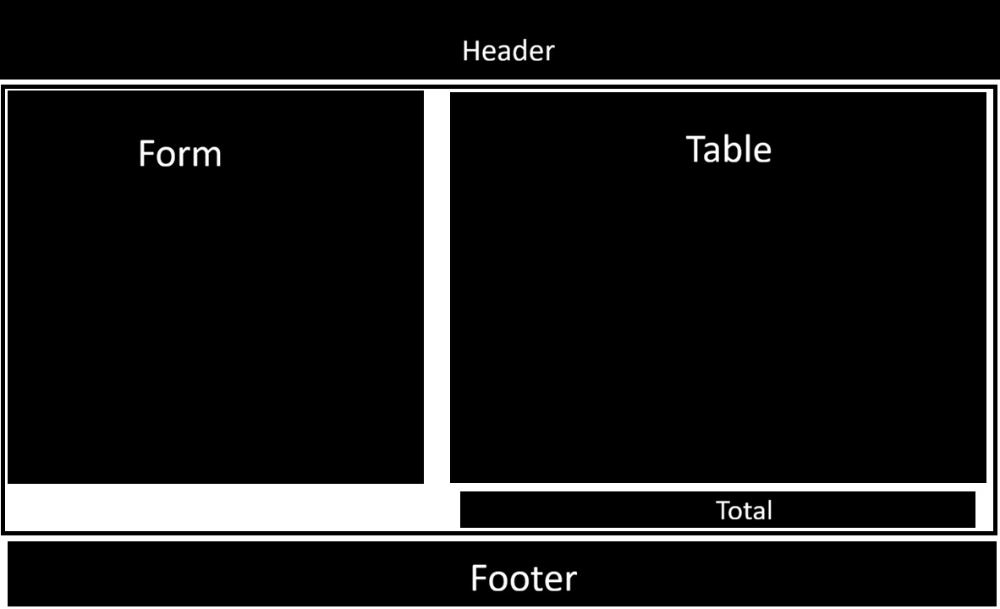

I have choosen this name because it describes perfectly the subject of the project, besides, it's quickly understandable for everyone who would like to use it
Site purpose
The website will allow users to register products using a form. Each product will include a name, category, quantity, and price. The information will be stored in the browser using localStorage and displayed in a table. Users will also be able to remove products and see the total value of the inventory.
Questions
- How can I quickly register a new product with its category, quantity and price?
- Where can I consult the total value in money of my whole actual inventory?
Color Schema
- Background / Neutral Color (Off-white / Slate Light - #f8fafc):Used as the main page background to ensure readability and reduce eye strain.
- Primary Color (Dark Slate - #2F4F4F): Used for main headings, such as the header or footer.
Typography
For this project I'm going to use just one font style due to the page will not have so many visual elements
The selected Font is: Libertinus Math
Wireframe

